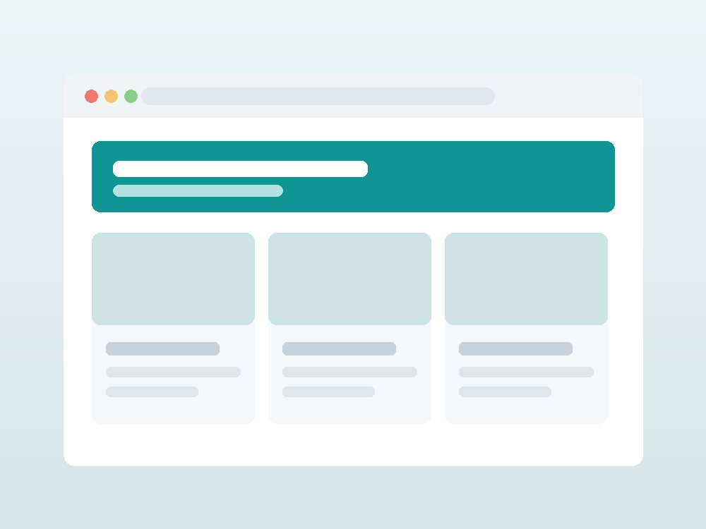
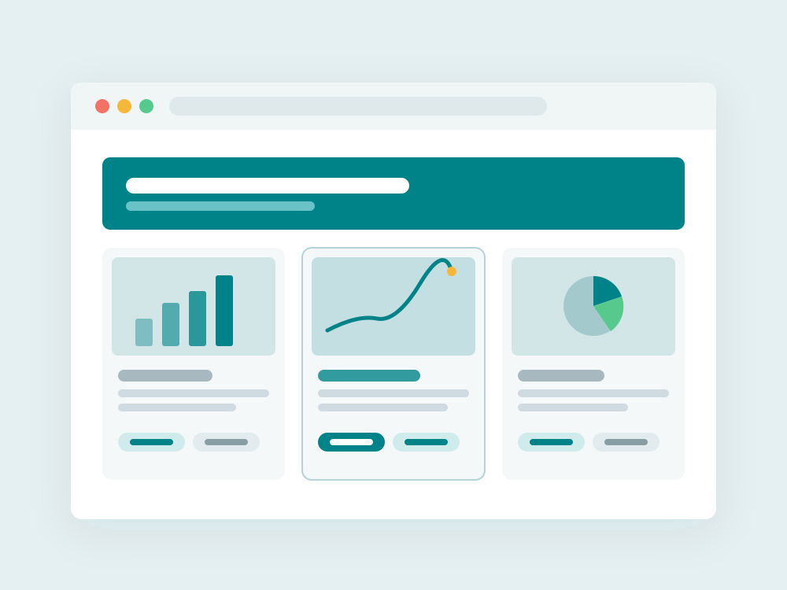
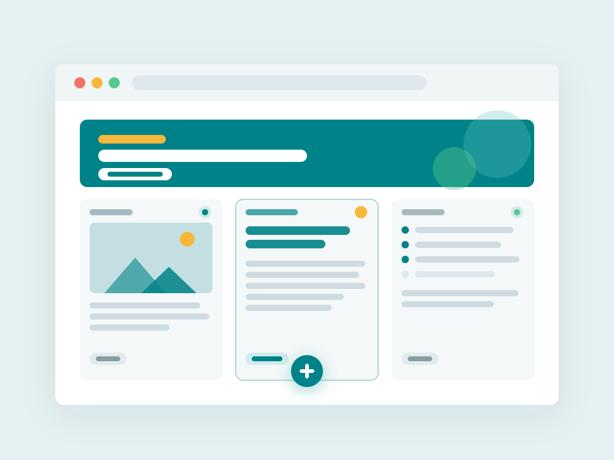

HASAMI
◯◯大学 1 年。Web サイトとアプリをつくっています。 手を動かしながら学ぶのが好きで、思いついたものはとりあえず形にしています。
ABOUT
はじめまして。プログラミングを始めて ４ 年の大学生です。 最初は「動くだけ」で嬉しかったのが、今は「使う人がどう感じるか」まで考えるのが楽しくなってきました。
身のまわりの小さな不便を、自分の手で解決するのが好きです。 つくったものはこのサイトにまとめています。気になるものがあればぜひ見てください。
WORKS

カフェの新店、メニュー、カルチャーをまとめたニュースサイト。

金融機関のニュースもわかる

概要と日程を掲載し、登録できるサイト。自分でつくってみた 1 作目。
SKILLS
いまは Python を勉強中です。分からないことは AI に聞きながら、手を動かして覚えるようにしています。
TIMELINE
CONTACT
ご相談、一緒に何かつくりたい方、感想でも大歓迎です。お気軽にご連絡ください。